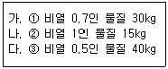

가스기능사 (2006-01-22 기출문제)
1과목: 가스안전관리
1. 순수 아세틸렌은 0.15MPa 이상 압축 시 위험하다. 그 이유는?
- 중합폭발
- 분해폭발
- 화합폭발
- 촉매폭발
(정답률: 60%)

2. 다음 중 폭굉이란 용어의 해석 중 적합한 것은?
- 가스중의 폭발 속도보다 음속이 큰 경우로 파면선단에 충격파라고 하는 솟구치는 압력파가 생겨 격렬한 파괴작용을 일으키는 현상
- 가스중의 음속보다 폭발속도가 큰 경우로 파면선단에 충격파라고하는 솟구치는 압력파가 생겨 격렬한 파괴작용을 일으키는 현상
- 가스중의 음속보다 화염전파속도가 큰 경우로 파면선단에 충격파라고 하는 솟구치는 압력파가 생겨 격렬한 파괴작용을 일으키는 현상
- 가스중의 화염전파속도보다 음속이 큰 경우로 파면선단에 충격파라고하는 솟구치는 압력파가 생겨 격렬한 파괴작용을 일으키는 현상
(정답률: 55%)
3. 다음 중 분해에 의한 폭발에 해당되지 않는 것은?
- 시안화수소
- 아세틸렌
- 히드라진
- 산화에틸렌
(정답률: 59%)
4. 긴급차단밸브의 동력원이 아닌 것은?
- 액압
- 기압
- 전기
- 차압
(정답률: 55%)
5. 용기종류별 부속품 기호가 틀리는 것은?
- AG : 아세틸렌가스를 충전하는 용기의 부속품
- PG : 압축가스를 충전하는 용기의 부속품
- LPG : 액화석유가스를 충전하는 용기의 부속품
- TL : 초저온용기 및 저온용기의 부속품
(정답률: 79%)
6. 고압가스 방출장치를 설치하여야 하는 저장탱크의 용량은 얼마 이상 이어야 하는가?
- 300m3
- 100m3
- 10m3
- 5m3
(정답률: 31%)
7. 다음 중 발화 발생 요인이 아닌 것은?
- 용기의 재질
- 온도
- 압력
- 조성
(정답률: 69%)
8. 내부 용적이 25,000ℓ인 액화산소 저장탱크의 저장능력은 얼마인가? (단, 비중은 1.14이다.)
- 28,500kg
- 21,930kg
- 24,780kg
- 25,650kg
(정답률: 49%)
9. 몇 km 이상의 거리를 운행하는 경우에 중간에 충분한 휴식을 취한 후 운행하는가?
- 200
- 100
- 50
- 10
(정답률: 83%)
10. 액화석유가스 사용시설에서 가스계량기는 화기와 몇 m 이상의 우회거리를 유지해야 하는가?
- 2
- 3
- 5
- 8
(정답률: 62%)
11. 도시가스 공급시설의 정압기실에 설치하는 가스누출경보기의 검지부는 바닥면 둘레 몇 m에 대해 1개 이상의 비율로 설치해야 하는가?
- 20m
- 30m
- 40m
- 60m
(정답률: 49%)
12. 가스의 허용농도란 그 분위기 속에서 1일 몇 시간 노출되더라도 신체장해를 일으키지 않는 것을 말하는가?
- 1시간
- 3시간
- 5시간
- 8시간
(정답률: 61%)
13. 도시가스배관을 도로에 매설하는 경우 보호포는 중압 이상의 배관의 경우에 보호판의 상부로부터 몇 ㎝ 이상 떨어진 곳에 설치하는가?
- 20㎝
- 30㎝
- 40㎝
- 60㎝
(정답률: 65%)
14. 가스 누출검지 경보장치의 설치기준 중 틀리는 것은?
- 통풍이 잘되는 곳에 설치할 것.
- 설치 수는 가스의 누설을 신속하게 검지하고 경보하기에 충분한 수 일 것.
- 그 기능은 가스 종류에 적절한 것일 것.
- 체류할 우려가 있는 장소에 적절하게 설치할 것.
(정답률: 82%)
15. 액화석유가스 용기 저장소의 시설기준 중 틀린 것은?
- 용기 보관실 주위의 2m(우회거리)이내에는 화기취급을 하거나 인화성물질 및 가연성물질을 두지 않는다.
- 용기 보관실의 전기 시설은 방폭 구조인 것이어야 하며, 전기스위치는 용기 저장실 내부에 설치한다.
- 용기 보관실 내에는 분리형 가스누출 경보기를 설치한다.
- 용기 보관실 내에는 방폭등 외의 조명등을 설치하지 아니한다.
(정답률: 63%)
16. 다음 중 개방식으로 할 수 없는 연소기는?
- 가스보일러
- 가스난로
- 가스렌지
- 가스순간온수기
(정답률: 53%)
17. 고압가스를 차량에 운반 시 액화석유가스를 제외한 가연성 가스는 몇 ℓ를 초과할 수 없는가?
- 12,000ℓ
- 14,000ℓ
- 16,000ℓ
- 18,000ℓ
(정답률: 64%)
18. 2개 이상의 탱크를 동일한 차량에 고정운반 기준에 적합하지 않은 것은?
- 탱크마다 주 밸브를 설치한다.
- 탱크 상호간 또는 탱크와 차량 사이를 견고히 결속할 것
- 충전관에는 안전밸브·압력계 및 긴급탈압밸브를 설치할 것
- 독성가스 운반 시 소화설비를 휴대할 것
(정답률: 68%)
19. 다음 가스 중 허용농도 값이 가장 작은 것은?
- 염소
- 염화수소
- 아황산가스
- 일산화탄소
(정답률: 44%)
20. 가연성 가스의 제조설비에서 오조작 되거나 정상적인 제조를 할 수 없는 경우에 자동적으로 원재료의 공급을 차단시키는 등 제조 설비내의 제조를 제어할 수 있는 장치는?
- 인터록 기구
- 가스누설 자동차단기
- 벤트 스택
- 플레어 스택
(정답률: 86%)
21. 액화석유가스의 냄새측정 기준에서 사용하는 용어 설명으로 옳지 않은 것은?
- 시험가스 : 냄새를 측정할 수 있도록 액화석유가스를 기화시킨 가스
- 시험자 : 미리 선정한 정상적인 후각을 가진 사람으로서 냄새를 판정하는 자
- 시료기체 : 시험가스를 청정한 공기로 희석한 판정용 기체
- 희석배수 : 시료 기체의 양을 시험가스의 양으로 나눈 값
(정답률: 72%)
22. 다음 독성가스의 검지방법 중 염화파라듐지에 의해 검지하는 가스는?
- 아황산가스
- 시안화수소
- 암모니아
- 일산화탄소
(정답률: 44%)
23. 발화점에 영향을 주는 인자가 아닌 것은?
- 가연성가스와 공기의 혼합비
- 가열속도와 지속시간
- 발화가 생기는 공간의 비중
- 점화원의 종류와 에너지 투여법
(정답률: 55%)
24. 아세틸렌가스의 용기에 표시하는 문자로 옳은 것은?
- 독
- 연
- 독, 연
- 지
(정답률: 73%)
25. 정전기에 관한 다음 설명 중 틀린 것은?
- 습도가 낮을수록 정전기를 축적하기 쉽다.
- 화학섬유로된 의류는 흡수성이 높으므로 정전기가 대전하기 쉽다.
- 액상의 LP가스는 전기 절연성이 높으므로 유동 시에는 대전하기 쉽다.
- 재료 선택 시 접촉 전위차를 적게 하여 정전기 발생을 줄인다.
(정답률: 60%)
26. 일반도시가스사업의 공급시설 중 최고사용압력이 저압인 가스 정제 설비에서 압력의 이상 상승을 방지하기 위해 설치하는 것은?
- 일류방지장치
- 역류방지장치
- 고압차단스위치
- 수봉기
(정답률: 38%)
27. 액화석유가스의 저장소 시설기준에 적합하지 않은 것은?
- 기화장치 주위에는 보호책을 설치해야 함
- 저장설비를 용기 집합식으로 해야 함
- 실외 저장소 주위에는 경계책을 설치하고 경계책과 용기보관장소 사이에는 20m 이상의 거리를 유지함
- 저장탱크 색은 은백색이고, 글씨 색은 적색임.
(정답률: 56%)
28. 액화독성가스의 질량 1,000kg 이상을 이동시에 휴대하여야 할 제독제의 소석회는 상자에 몇 kg 이상을 넣어 휴대하여야 하는가?
- 20kg
- 30kg
- 40kg
- 50kg
(정답률: 62%)
29. 도로에 도시가스배관을 매설하는 경우에 라인마크는 구부러진 지점 및 그 주위 몇 m 이내에 설치하는가?
- 15m
- 30m
- 50m
- 100m
(정답률: 35%)
30. 다음 중 공기를 압축·냉각하여 액체 공기를 만드는 과정 및 액체 공기를 분류·증류하는 과정에서 기화, 액화되어 나오는 가스의 순서가 맞는 것은?
- 액화는 산소가 먼저하고, 기화는 질소가 먼저 한다.
- 액화는 질소가 먼저하고, 기화는 산소가 먼저 한다.
- 산소가 액화, 기화 모두 먼저 한다.
- 질소가 액화, 기화 모두 먼저 한다.
(정답률: 59%)
2과목: 가스장치 및 기기
31. 강의 표면에 타 금속을 침투시켜 표면을 경화시키고 내식성, 내산화성을 향상시키는 것을 금속침투법이라 한다. 그 종류에 해당되지 않는 것은?
- 세라다이징(Shear dizing)
- 칼로라이징(Caio rizing)
- 크로마이징(Chro mizing)
- 도우라이징(Dow rizing)
(정답률: 65%)
32. LP가스 용기의 최대 충전량 산식은? (단, C는 가스정수, V는 내용적, P는 최고충전압력이다.)
- G = V/C
- G = 0.9 · d · V
- G = (P + 1) · V
- G = V - 0.9 · d
(정답률: 43%)
33. 질소를 취급하는 금속재료에서 내질화성(耐窒化性)을 증대시키는 원소는?
- Ni
- Al
- Cr
- Ti
(정답률: 67%)
34. 다음 중에서 액면계의 측정방식에 해당하지 않는 것은?
- 다이어프램식
- 정전용량식
- 음향식
- 환산천평식
(정답률: 50%)
35. 저압 압축기로서 대용량을 취급할 수 있는 압축기의 형식은?
- 왕복동식
- 원심식
- 회전식
- 흡수식
(정답률: 41%)
36. 공기 액화 분리장치에는 가연성 단열재를 사용할 수 없다. 그 이유는 어느 가스 때문인가?
- N2
- CO2
- H2
- O2
(정답률: 64%)
37. 압력배관용 탄소강관의 KS규격기호는?
- SPP
- SPPS
- SPLT
- SPHT
(정답률: 68%)
38. 금속재료에 S, P, Ni, Mn과 같은 원소들이 함유하면 강에 영향을 미치는데 다음 설명 중 틀린 것은?
- S : 적열취성의 원인이 된다.
- P : 상온취성을 개선시킨다.
- Mn : S와 결합하여 황에 의한 악영향을 완화시킨다.
- Ni : 저온취성을 개선시킨다.
(정답률: 39%)
39. 고압장치의 상용압력이 150kg/cm2일 때 안전밸브의 작동압력은?
- 120kg/cm2
- 165kg/cm2
- 180kg/cm2
- 225kg/cm2
(정답률: 36%)
40. 아세틸렌 제조시설 중 아세틸렌 접촉부분에서 사용해서는 안 되는 것은?
- 알루미늄 또는 알루미늄 함량 62%
- 스테인레스 24종 이상
- 철 또는 탄소 함유량이 4.3% 이상인 강
- 동 또는 동 함유량이 62% 이상
(정답률: 63%)
41. 오르잣트 가스 분석기에서 CO2의 흡수액은?
- 포화 식염수
- 염화 제 1구리용액
- 알칼리성 피로가롤 용액
- 수산화칼륨 30% 수용액
(정답률: 63%)
42. 공기 액화 분리장치의 CO2에 관한 설명으로 옳지 않은 것은?
- CO2는 수분리기에서 제거하여 건조기에서 완결되어진다.
- CO2는 장치 폐쇄를 일으킨다.
- CO2는 8% MaOH용액으로 제거한다.
- CO2는 원료 공기에 포함된 것이다.
(정답률: 36%)
43. 고압가스설비에 설치하는 벤트스택과 후레아스택에 관한 기술 중 틀린 것은?
- 후레아스택에서는 화염이 장치 내에 들어가지 않도록 역화방지장치를 설치해야 한다.
- 후레아스택에서 방출하는 가연성가스를 폐기할 때는 흑연의 발생을 방지하기 위하여 스팀을 불어넣는 방법이 이용된다.
- 가연성가스의 긴급용 벤트스택의 높이는 착지농도가 폭발하한계값 미만이 되도록 충분한 높이로 한다.
- 벤트스택은 가능한 공기보다 무거운 가스를 방출해야 한다.
(정답률: 70%)
44. 펌프 중 고압에 사용하기 적합한 펌프는?
- 원심 펌프
- 왕복 펌프
- 축류 펌프
- 사류 펌프
(정답률: 60%)
45. 공기 액화분리기의 원료공기 중에서 제거해야 할 불순물로는 보통 수분과 ( )이(가) 있다. 괄호 속에 가장 적합한 것은?
- He
- CO2
- N2
- Ar
(정답률: 64%)
3과목: 가스일반
46. 다음 중 가장 큰 압력은?
- 1,000kg/m2
- 10kg/cm2
- 0.01kgmm2
- 수주 150m
(정답률: 34%)
47. 진공도 90%란? (단, 대기압은 760㎜Hg)
- 0.1033kg/cm2·a
- 1.148ata
- 684㎜Hg
- 760㎜Aq
(정답률: 34%)
48. 액체는 무색투명하고 특유의 복숭아향을 가지고 있으며 맹독성이 있고 고농도를 흡입하면 목숨을 잃는 기체는?
- 일산화탄소
- 포스겐
- 시안화수소
- 메탄
(정답률: 84%)
49. LNG의 임계온도는 -82℃이다. 비점은 얼마인가?
- -50℃
- -82℃
- -120℃
- -162℃
(정답률: 67%)
50. 다음은 산소(O2)에 대하여 설명한 것이다. 틀린 것은?
- 무색, 무취의 기체이며, 물에는 약간 녹는다.
- 가연성 가스이나 그 자신은 연소하지 않는다.
- 용기의 도색은 일반 공업용이 녹색, 의료용이 백색이다.
- 용기는 탄소강으로 무계목 용기이다.
(정답률: 77%)
51. 다음 중 가스 성질에 대한 설명으로 맞는 것은?
- 질소는 안정된 가스이며 불활성 가스라고도 불리우고 고온에서도 금속과 화합하는 일은 없다.
- 암모니아는 산이나 할로겐과도 잘 화합한다.
- 산소는 액체공기를 분류하여 제조하는 반응성이 강한 가스이며 그 자신으로서 연소된다.
- 염소는 반응성이 강한 가스이며 강에 대해서 상온에서도 건조 상태에서 현저한 부식성이 있다.
(정답률: 40%)
52. 다음 중 엔트로피 변화가 없는 것은?
- 폴리트로픽 변화
- 단열변화
- 등온변화
- 등압변화
(정답률: 48%)
53. 가스와 그 용도를 짝지은 것 중 틀린 것은?
- 프레온 - 냉장고 냉매
- 이산화황 - 환원성 표백제
- 시안화수소 - 아크릴로 니트릴 제조
- 에틸렌 - 메탄올 합성원료
(정답률: 41%)
54. 다음 보기의 세 종류 물질에 동일량의 열량을 흡수시켰을 때 그 최종온도가 높은 것부터 낮은 것의 순서대로 올바르게 나열된 것은? (단, 최초 온도는 동일한 것으로 본다.)

- ①-②-③
- ①-③-②
- ②-①-③
- ②-③-①
(정답률: 34%)
55. LPG의 성질에 대한 설명 중 틀린 것은?
- 상온, 상압에서는 기체이지만 상온에서도 비교적 낮은 압력으로 액화가 가능하다.
- 프로판의 임계온도는 32.3℃이다.
- 동일온도 하에서 프로판은 부탄보다 증기압이 높다.
- 순수한 것은 색깔이 없고 냄새도 없다.
(정답률: 35%)
56. 다음 중 가연성 가스 취급 장소에서 사용 가능한 방폭공구가 아닌 것은?
- 알루미늄 합금공구
- 베릴륨 합금공구
- 고무공구
- 나무공구
(정답률: 66%)
57. 0℃, 얼음 30kg을 100℃ 물로 만들 때 필요한 프로판 질량은 몇 g인가?(단, 프로판의 발열량은 12,000kcal/kg이다.)
- 300
- 350
- 400
- 450
(정답률: 25%)
58. LP가스의 특성을 잘못 설명한 것은?
- 상온 · 상압에서 기체 상태이다.
- 증기비중은 공기의 1.5~2.0배이다.
- 액체는 물보다 무겁다.
- 액체는 무색 · 투명하며, 물에 잘 녹지 않는다.
(정답률: 64%)
59. 수소가스의 용도 중 가장 거리가 먼 것은?
- 산소와 수소의 혼합기체의 온도가 높으므로 용접용으로 사용한다.
- 암모니아나 염산의 합성 원료로 사용한다.
- 경화유의 제조에 사용한다.
- 탄산소다의 제조 시 주원료로 사용한다.
(정답률: 37%)
60. 다음 온도에 대한 설명 중 옳은 것은?
- 절대 0도는 물의 어는 온도를 0으로 기준한 온도이다.
- 임계(臨界)온도 이상시에는 액화되지 않는다.
- 임계온도는 기체를 액화시킬 수 있는 최소의 온도이다.
- 온도의 상한계(上限界)를 기준으로 정한 것이 절대온도이다.
(정답률: 46%)